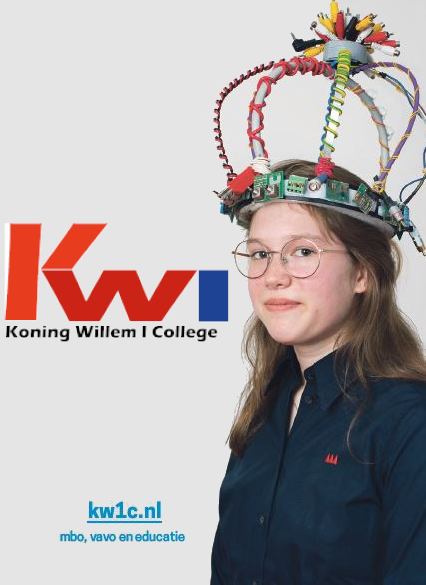
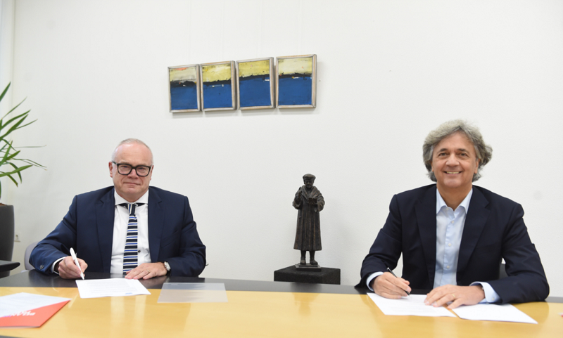
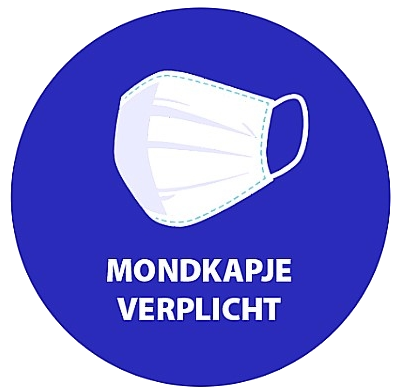
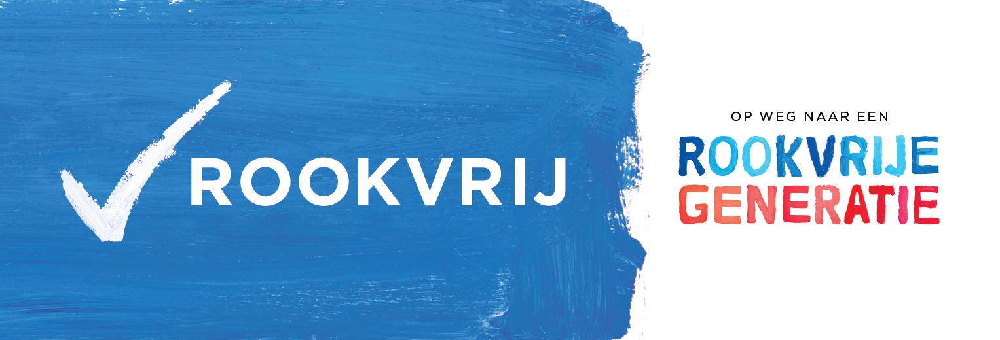

ONLINE INFORMATIEAVOND 2 DECEMBER
Wil je kennismaken met het Koning Willem I College? Dat kan! Op woensdag 2 december 2020 hebben wij een online informatieavond. In maximaal 3 rondes kun je een voorlichtingsronde volgen bij de opleiding(en) van jouw keuze.
De rondes zijn op de volgende tijden:
Ronde 1: 17.30 – 18.10 uur
Ronde 2: 18.20 – 19.00 uur
Ronde 3: 19.10 – 19.50 uur
Je kunt je hier aanmelden voor de Informatieavond. Op deze site vind je ook meer informatie over de voorlichtingen.
Je kunt deze avond kiezen uit meer dan honderd verschillende voorlichtingen over onze opleidingen. Ook kun je een brede presentatie volgen over onze domeinen, topsport en studeren, informatie over hulpvragen en ondersteuningsmogelijkheden, en hoe vind ik werk voor een bbl-opleiding. Er is ook een voorlichting speciaal voor ouders/verzorgers. Uiteraard is er genoeg ruimte voor het stellen van vragen!
MAAK KENNIS MET HET KONING WILLEM I COLLEGE

Kom kennismaken met het Koning Willem I College
Geen echte Open Dag? Geen nood, onze online deuren blijven voor jou open. Hoe kun je in deze tijd kennismaken met ons college? Op heel veel verschillende manieren!
Op woensdag 2 december is er een online informatieavond. Kun je die avond niet? Dan zijn er nog genoeg andere mogelijkheden:
Je leert ons kennen:
* Via telefonisch studiekeuzeadvies met een studieadviseur (op afspraak)
* Via toffe afdelingsfilmpjes en meer
* Via je decaan (opleidingenoverzicht en 'reisgids')
* Via de Opleidingeninfolijn (073 62 49 600)
ONDERZOEK NAAR SAMENWERKING KW1C EN DE LEIJGRAAF
Goed onderwijs blijven bieden voor nu en in de toekomst, is voor ons het allerbelangrijkste. We zoeken continu naar manieren om dit te blijven doen en zelfs te verbeteren. Hierin zoeken we ook soms de samenwerking op met andere scholen.
Afgelopen periode zijn er verkennende gesprekken gevoerd tussen vertegenwoordigers vanuit zowel het Koning Willem I College als De Leijgraaf over de vraag of een duurzame samenwerking tussen de twee onderwijsinstellingen wenselijk zou zijn. De uitkomst van deze gesprekken was dat we beide positief staan tegenover een onderzoek om de mogelijkheden van een duurzame samenwerking verder te onderzoeken. We zien namelijk allebei veel voordelen in een intensievere samenwerking. Daarom ondertekenden wij vandaag een intentieovereenkomst.

Startsein onderzoek
Als startsein voor deze onderzoeksfase ondertekenden op vrijdag 13 november ons bestuur en het bestuur van De Leijgraaf een zogenaamde intentieovereenkomst. Met deze officiële overeenkomst laten we zien dat we allebei de intentie hebben om samen te werken. We weten alleen nog niet op wat voor manier en hoe deze samenwerking eruit komt te zien. Beide Raden van Toezicht en ook de Ondernemingsraden en Studentenraden zijn al eerder betrokken en staan achter deze intentie.
De toekomst samen inkleuren
In maart 2021 vindt een eerste evaluatiemoment plaats. Op dat moment kijken we of we het onderzoek voortzetten en op welke manier we dit verder inkleuren. Tijdens het onderzoek verandert er voor niemand iets. We blijven je onderwijs bieden op de vertrouwde manier die je van ons gewend bent. Pas als de resultaten uit het onderzoek bekend zijn, weten we of er een samenwerking komt en wat dit verder gaat betekenen.
Meest gestelde vragen
Wat is de bedoeling van deze intentieovereenkomst?
Er zijn in de afgelopen tijd gesprekken geweest tussen verschillende medewerkers van De Leijgraaf en het Koning Willem I College. Daarbij is gekeken of er grote verschillen zijn. Bijvoorbeeld hoe we tegen onderwijs aankijken en hoe we zaken aanpakken. Tijdens die gesprekken werd duidelijk dat beide scholen er veel voordelen in zien om meer met elkaar samen te werken.
De scholen hebben nu naar elkaar uitgesproken dat ze allebei graag verder willen onderzoeken hoe ze het beste kunnen gaan samenwerken. Het plan om dat te onderzoeken hebben ze vastgelegd in de intentieovereenkomst.
Gaan het Koning Willem I College en De Leijgraaf samenwerken?
Dat is op dit moment nog niet duidelijk. Wat wel duidelijk is, is dat het Koning Willem I College en De Leijgraaf samen een onderzoek starten om te kijken of ze er voordelen uit kunnen halen als ze gaan samenwerken.
Wat houdt het onderzoek in?
De komende maanden gaan de twee scholen met elkaar verder kijken wat de mogelijkheden en effecten zijn van een samenwerking. Zodat ook in de toekomst studenten in de regio Noordoost Brabant kunnen rekenen op goed beroepsonderwijs.
Wanneer is duidelijk of het Koning Willem I College en De Leijgraaf gaan samenwerken?
De komende tijd gaan we onderzoeken of een samenwerking voordelen heeft. Maar we onderzoeken ook welke vorm van samenwerken slim is. Op 1 maart 2021 is er een evaluatiemoment, dan bekijken we of we verdergaan met het onderzoek en hoe we dit gaat doen.
Wat betekent dit nu voor mijn opleiding?
Deze overeenkomst zegt dat we in de komende maanden kijken hoe we gaan samenwerken. Omdat we nog kijken naar hoe we dat het beste kunnen doen, is het te vroeg om te weten wat dit betekent voor onze opleidingen. Beide scholen hebben als doel om studenten nu en in de toekomst goed beroepsonderwijs te bieden, dat goed is afgestemd op de arbeidsmarkt van de regio Noordoost Brabant.
Hoe word ik op de hoogte gehouden?
In de komende periode gaan we jou goed informeren. Dit doen we onder andere door nieuwsberichten te plaatsen op de website, Portaal en de app. Natuurlijk kun je ook altijd met vragen bij je mentor terecht.
CORONAVIRUS - VEELGESTELDE VRAGEN
Lees verder voor de meest actuele informatie over de keuzes van het Koning Willem I College ten aanzien van het coronavirus.
* let op - belangrijke toevoeging FAQ: mondkapjesplicht per 7 oktober 2020 *
Hier vind je de meest recente versie van onze FAQ rondom corona
En hier vind je de beslisboom
English version: see here
MONDKAPJESPLICHT

Vanaf 7 oktober is het dragen van een mondkapje op het Koning Willem I College verplicht.
Wanneer draag je een mondkapje?
- Een mondkapje is verplicht wanneer je je verplaatst in de gebouwen. Dit wil zeggen in gangen, hallen, trappen, wc’s, kantines; alle ruimtes waar je op dat moment niet zit, maar loopt
- Een mondkapje is verplicht in praktijkruimtes waarbij het noodzakelijk is om dicht bij elkaar te staan
Wanneer hoef je geen mondkapje te dragen?
- Tijdens de les hoeven studenten en leraren geen mondkapje te dragen. Behalve bij praktijklessen waarbij het noodzakelijk is om dicht bij elkaar te komen.
- Je hoeft geen mondkapje te dragen als je een zitplaats hebt in de kantine. Als je opstaat en je verplaatst, doe je je mondkapje weer op.
Mondkapjes beschikbaar
We gaan er van uit dat iedereen een eigen mondkapje meebrengt. Mocht je je mondkapje vergeten zijn, dan kun je een uitwasbaar mondkapje kopen tegen een gereduceerd tarief van € 2,- per stuk bij de winkeltjes op de Vlijmenseweg en de Onderwijsboulevard.
Overige maatregelen blijven gelden
Het dragen van een mondkapje zorgt ervoor dat we blijven opletten en elkaar beschermen. Het is geen vervanging van andere maatregelen! Dus ook met een mondkapje op moet je anderhalve meter afstand houden van elkaar. En desinfecteer je regelmatig je handen. Hiermee voorkom je verspreiding van het virus.
ROOKVRIJ SCHOOLTERREIN
Per 1 augustus 2020 zijn alle locaties van het Koning Willem I College rookvrij.
Wat houdt dat in? Klik hier.

ONTDEK HET LAND VAN KONING WILLEM I COLLEGE
Laten we eerlijk zijn, we zijn natuurlijk niet écht een land. Wij zijn een school, gewoon een goede school. Maar, wel eentje die op een eigen manier tegen de wereld aankijkt. Met een eigen cultuur, een eigen plek en een eigen -moderne- manier van lesgeven.
Bovendien lopen hier elke dag duizenden mensen rond die hier eten, werken en studeren. Vandaar dat we je welkom heten in een land. Een land zonder grenzen en met onbegrensde mogelijkheden. Een plek waar dingen kunnen en waar altijd iets gebeurt. Wij houden namelijk niet van afwachten. Wij houden van proberen; experimenteren. Leren door dingen te ervaren. Door gewoon vanaf dag één aan de slag te gaan. Daarom hebben we hier een bank, een garage, een restaurant en zelfs een theater. Zo leiden we mensen op die zelf iets kunnen bedenken, en het vervolgens ook zelf kunnen doen. Vakmensen die goed voor zichzelf en voor de wereld om ons heen zorgen.
Welkom in een land waar je creatief leert denken, maar toch midden in de realiteit blijft staan. Welkom in het land van Koning Willem I College.